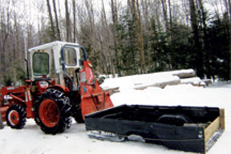

I turned an old pickup truck bed liner into a useful skidder to pull behind my tractor. It’s great for hauling cordwood or skidding stone, and we also use it to groom snow trails. It might even work for hay rides.
By adding hardwood boards to the underside of the liner and a drawbar in front, it skids right along. The boards under the liner are attached with wood screws from the “valleys” of the liner down into the boards. Do not attach a rope or chain directly to the more fragile liner, but rather to the wooden frame. We added half-inch threaded eye bolts through the drawbar to attach the chain for pulling. A simple tailgate was also attached to the rear to hold the load in and to strengthen the back of the liner.
|
 BOB LANGEVIN You can transform a truck bed liner into a firewood carrier. |
|
|